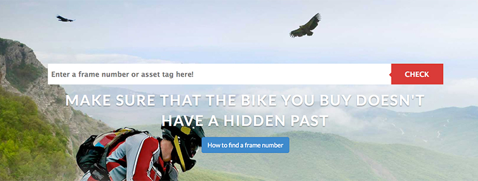

How open data is putting the brakes on £100m worth of bike theft
Winner: Crime and Justice Open Data Challenge
Overview
Check That Bike! is a new search engine which uses open data and crowdsourcing to help UK cyclists avoid buying stolen second-hand bikes, it also aims to disrupt the market for stolen bikes by making them far more difficult to sell. Bike theft in the UK remains a persistent problem, the annual figures from Crime in England and Wales, Year Ending March 2014 point to 376,000 bikes being stolen (this figure covers those reported to the Police, and unreported). Check That Bike! wants to raise public awareness about bike theft and stop it being viewed as an unimportant low-value crime, when in fact many stolen bikes are worth thousands of pounds.

Check That Bike! was conceived and developed by entrepreneur John Moss. The service is offered for free as a way to persuade members of the public to investigate the history of a second-hand bike before they buy it.
John says, “Check That Bike! is a way to check unique bike frame numbers against datasets of stolen bikes from Police and insurance records. It is much like the concept used for checking stolen motor vehicles, which have always received more attention because of their apparent higher value.”
How it works
Check that Bike! works by accessing a number of databases containing stolen bike details. These databases include ad hoc police data; national registers including Stolen Bikes UK and Bikesecure.co.uk; local registers including Stolen Bristol Bikes; manufacturers that run mini stolen bike registers for warranty purposes; insurers whose databases help identify stolen bikes when a claim is raised; and the Bing search engine.
The majority of bikes manufactured in the United Kingdom have a unique serial number or asset tag printed on them, and using Check That Bike!’s search engine, people can enter the serial number of the bike they are looking at buying to see if it has been previously reported as stolen.
Open data
The wheels of Check that Bike! are in motion thanks to open data – the raw material for the service. The more stolen bike data John has access to, the more comprehensive the checks become. John says, “This is an open data project. The aim is to collect as much information as possible about unique numbers on bikes and offer a search engine. I'm operating on eight sources of data at the moment that have come from the police force and insurers, allowing me to look for hotspots on bike crime. However John highlights that the supply of open data isn’t always as forthcoming as he’d like: “I need a constant flow of data, which is currently coming in dribs and drabs.”
Throughout the project, John has built strong working relationships with police forces across the country including Yorkshire, Leicestershire, Somerset and the West-Midlands – who give him regular data on stolen frame numbers. John also submits Freedom of Information requests for the data he needs – whilst this has resulted in the release of thousands of frame numbers from stolen bikes, John wants to see far more of this information proactively released as open data.
John is committed to actively challenging perceptions that bike theft is a ‘petty crime’ by unlocking the value of his concept. John reports that the service has identified approximately 1097 stolen bikes (October 2014) with a total estimated value of £291,802.
John’s commitment to openness and transparency doesn’t end with his use of open data. Check that Bike! openly shares its own data to communicate the value of its service. Every check undertaken by a member of the public will generate a result that is shared on the website, including the number of checks run and how many bikes have been identified as stolen.
John also provides a free-to-use API allowing other developers to harness the power of Check That Bike! in their own projects. To date 33 developers are using the API to power checks in mobile applications or on classified websites like preownedcycles.co.uk.
Gaining momentum
Check That Bike! has over 15,000 visitors per month, and as the site’s popularity grows, John is hungry for more data. “I would like to scale the service, but that will require more data. The more data I have, the more I can encourage people to use it.”
The Check That Bike! website is mobile friendly but in the future John is looking to build further value into his concept by developing a mobile app, which may be supplementary to the existing service or a product in its own right.
Find more information on the Crime and Justice Challenge here, and more on the ongoing Open Data Challenge Series here.